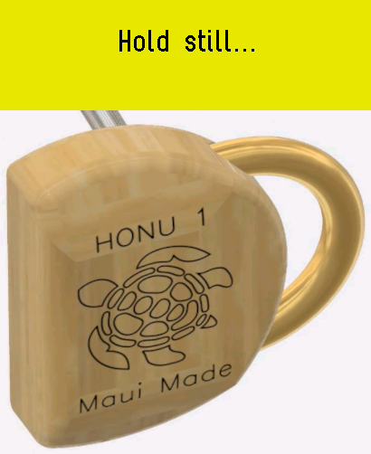
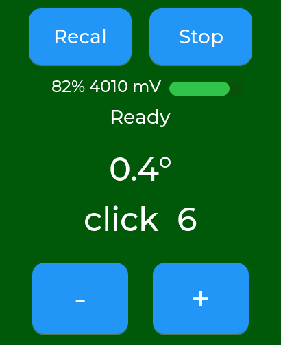
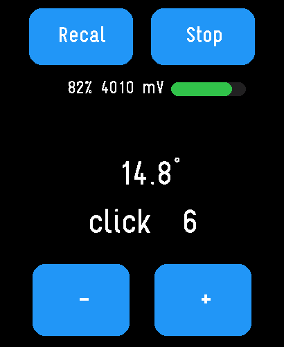

Honu Watch guide
How to use your Honu Watch
The Honu Watch measures the backswing of your putting stroke and gives you audio feedback, to teach a well-controlled motion that varies only in the length of the stroke.
The idea: a pendulum stroke
Novice golfers think about hitting a putt harder or softer. Great putters always stroke the ball with the same amount of effort, and control distance by the length of the backswing. The tempo and the “hit” are always the same; only the length of the stroke changes.
This is the “pendulum” motion: a pendulum of a given length always takes the same time to swing, however far it swings from rest. A pendulum stroke is good for both distance control and directional accuracy, because an inconsistent “hit” usually varies the face angle at impact.
The Honu Watch measures your backswing and tells you about it with sound. Using it will lock in your distance control and stabilize your direction, so you won't pull putts by trying to hit them harder, and vice versa.
Wearing the watch
You can wear the watch on either wrist, facing either up or down. It can be convenient to wear it on the wrist opposite your regular watch, so you don't have to take the other one off, and on the inside of your wrist so you can see it in the address position — but the watch doesn't care either way.
Getting started
1 Tap it at address
Turn the watch on and get into your putting position. The first screen asks you to tap when in putting position — tap it. That calibrates the watch to your resting position.

You don't have to tap. If you simply get into your putting position and hold still for about three seconds, the watch calibrates by itself and goes straight to “Ready”. It does this as long as the watch isn't lying flat and face up, the way you hold it to read the time. Tapping the screen works too — use whichever you prefer.
2 Hold still
The watch looks for a few seconds of stillness, and works out the angle of your wrist relative to the ground at address.

3 Wait for “Ready”
After a couple of seconds of stillness in the rest position, the watch says “Ready” to tell you that you can begin your stroke. The screen turns green too.

4 Make your stroke
The watch senses the change in orientation during the stroke and gives an audible click — a short tone from the watch's speaker — each time the backswing passes a new angular threshold.
Clicking stops when you reverse into the forward stroke. Once the putter settles back near address, the watch re-arms and says “Ready” again, for the next putt.

Setting the click threshold
The screen goes blank a few seconds after you start, to save power — the watch is still working and sensing your position. Tap the screen and it lights up again, so you can use the on-screen − and + buttons to change the click threshold.
The threshold numbers correspond roughly to “paces away from the hole”, but only approximately, because greens and golfers vary. Regardless: a threshold of 1 is a very short putt, while 12 is quite a long one.
What the watch says
The watch talks to you, so you don't have to look at it while you putt.
- “Ready” — you can begin your stroke. It says it again each time it re-arms after a putt.
- The click setting — each time you press − or +, the watch says the new number out loud.
- A number after every stroke — a moment after the forward stroke, the watch says how long your backswing was.
That last number is on the same scale as the click setting: it is the setting at which your backswing would just have clicked once. So if you set the click to the number you just heard, a backswing like that one clicks exactly once.
A way to use it: hit a putt of the length you want to practice, listen to the number, then set the click threshold to that number.
The goal: exactly one click
Set the threshold for the length of the putt you are practicing, then make a well-controlled backswing so that the watch clicks exactly once before the forward stroke.
If the watch clicks twice, or even more times, your stroke was twice as long as necessary. That is very common with a jerky putting stroke: the putter is moving so fast that you can't stop it between the first and second clicks.
Unless you already have an excellent putting stroke, you will probably find it difficult at first to make it click just once. That is the whole point of practicing with it.
How to practice
- Make a very slow backswing, until you hear a click.
- Then begin the forward stroke gently.
- Start at large threshold values; that is easier at first.
- As your control improves, move to smaller thresholds and shorter distances.
After some practice
Your putting stroke will become silky smooth, and you will feel the backswing length for different length putts. You will know just what a one-click stroke at a given setting feels like, and you can imagine exactly when the click will happen.
You will then control distance solely by backswing length, without thinking that you need to hit putts harder or softer.